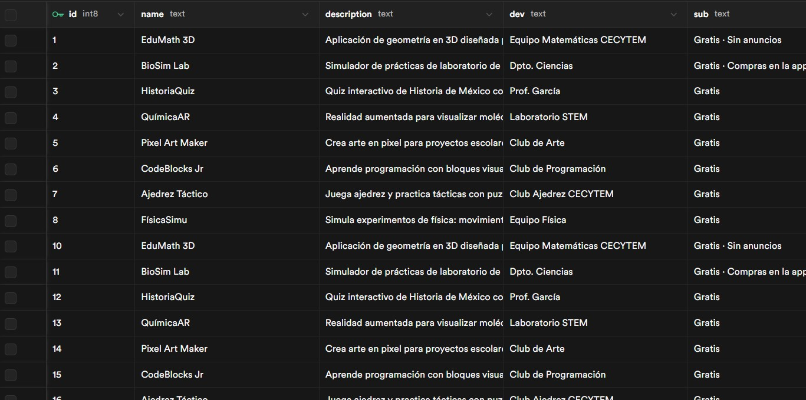
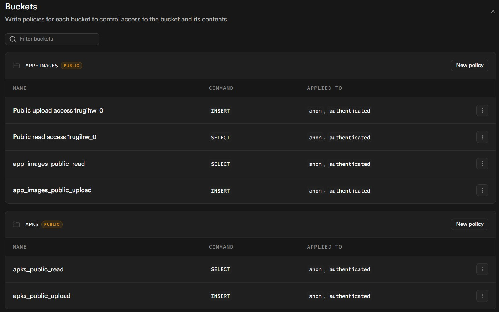
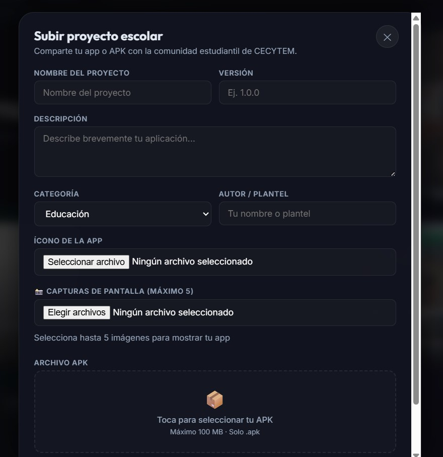
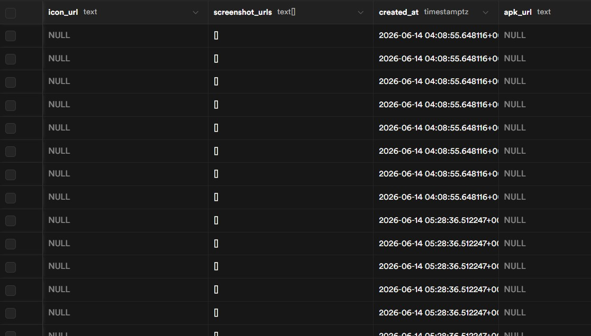

Ecosistema Backend & Persistencia con Supabase
Implementación de una arquitectura BaaS (Backend as a Service) para centralizar la gestión de datos relacionales, el almacenamiento seguro de archivos multimedia en la nube y la comunicación directa con el frontend sin depender de servidores tradicionales.
storage Base de Datos Relacional (PostgreSQL)
Diseño de tablas en Supabase para estructurar la información de los proyectos: IDs únicos, títulos, descripciones, timestamps de creación/actualización y URLs de recursos. Implementación de restricciones y relaciones para garantizar integridad de datos.
cloud_upload Cloud Storage (Buckets)
Configuración de buckets de almacenamiento público/privado con políticas de seguridad (RLS) para almacenar de forma óptima los assets e imágenes subidas por el usuario. Gestión automática de compresión y entrega CDN.


admin_panel_settings Flujo de Administración
Interacción de la interfaz de administración (Frontend) con el cliente de Supabase para realizar operaciones CRUD y procesar la subida de archivos multimedia en tiempo real. El formulario valida datos, genera URLs firmadas y actualiza la base de datos de forma atómica.


verified Características Clave
- Autenticación y persistencia segura con Row Level Security (RLS)
- Consultas optimizadas en tiempo real con suscripciones a cambios
- Servidor en la nube con disponibilidad 24/7 y escalabilidad automática
- Modularización de lógica mediante SDK de Supabase para JavaScript
- Gestión de errores centralizada con logging estructurado
- Políticas de acceso granulares por usuario y rol
import { createClient } from '@supabase/supabase-js'
const supabaseUrl = process.env.NEXT_PUBLIC_SUPABASE_URL
const supabaseAnonKey = process.env.NEXT_PUBLIC_SUPABASE_ANON_KEY
export const supabase = createClient(supabaseUrl, supabaseAnonKey)
// Ejemplo de función para registrar un proyecto y subir una imagen
async function registerProject(projectName, description, imageFile) {
try {
// Subir imagen al bucket de Supabase Storage
const { data: uploadData, error: uploadError } = await supabase.storage
.from('project-images')
.upload(`${projectName}/${imageFile.name}`, imageFile, {
cacheControl: '3600',
upsert: false
})
if (uploadError) throw uploadError
const imageUrl = `${supabaseUrl}/storage/v1/object/public/${uploadData.path}`
// Insertar datos del proyecto en la base de datos
const { data: projectData, error: projectError } = await supabase
.from('projects')
.insert([
{ name: projectName, description: description, image_url: imageUrl },
])
if (projectError) throw projectError
console.log('Proyecto registrado con éxito:', projectData)
return projectData
} catch (error) {
console.error('Error al registrar el proyecto:', error.message)
return null
}
}